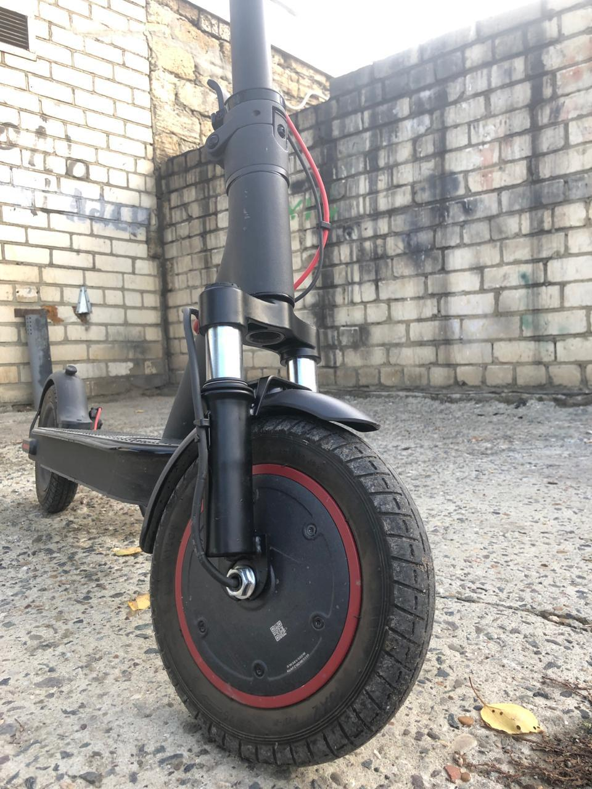
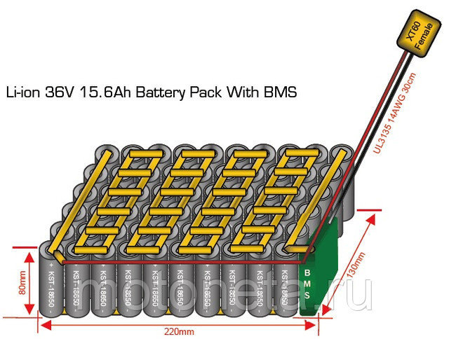
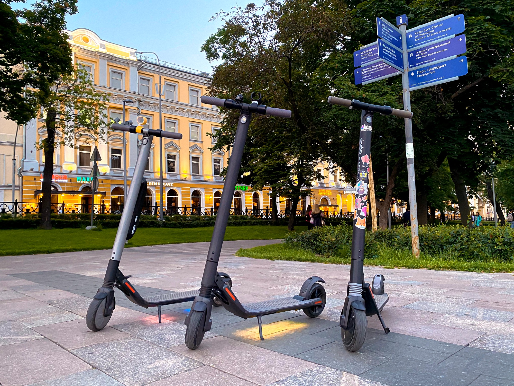
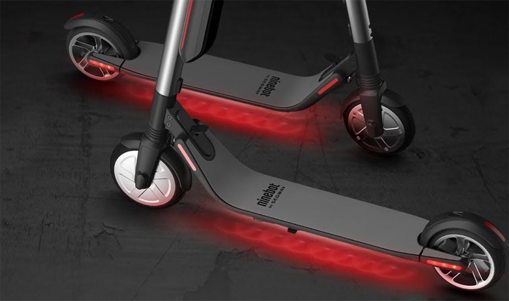
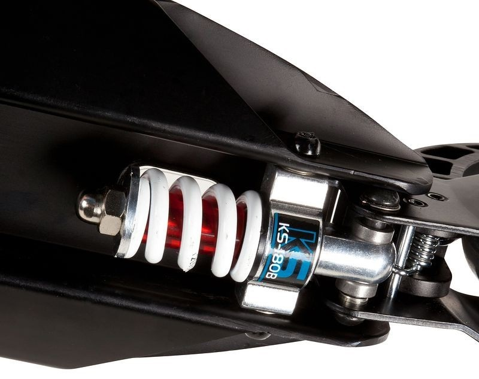
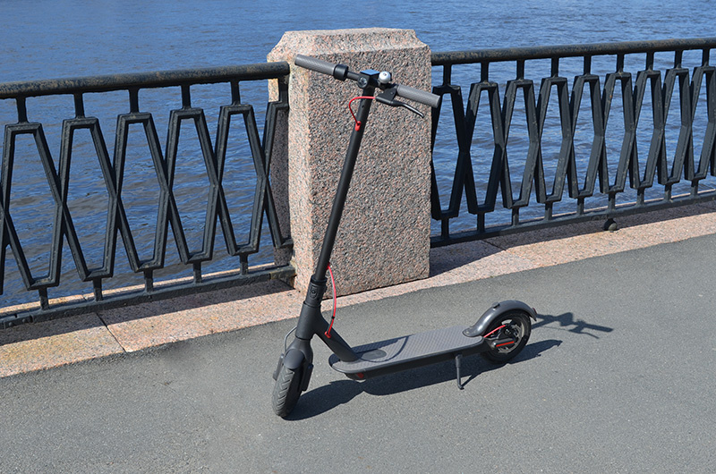

Двигатель. На большинстве электросамокатов устанавливаются бесколлекторные двигатели, которые отличаются надежностью, долгим сроком службы и высоким КПД. Городски оснащаются чаще всего одним мотором, который позволяет снизить потребление и увеличить запас хода.
Аккумулятор. В отличие от свинцово-кислотных разновидностей литий-ионные и литий-железо-фосфатные батареи обладают уменьшенным весом и более длительным сохранением заряда.
Рама. Корпус городских моделей выполняется из небольшого количества алюминия и часто пластика, чтобы вес самоката был небольшим и его было удобно перемещать в условиях города.
Колеса. Минимальный диаметр колес лучших электросамокатов для бездорожья составляет 8 дюймов. Надувные разновидности улучшают амортизацию и лучше нивелируют любые вибрации.
Подвеска. Чаще всего представляет из себя подпружининое заднее колесо.
Тормоза. Городские самокаты оснащены системой торможения двигателем, а так же ножным или ручным задним тормозом.
